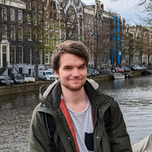

Attended EMNLP 2025 in Suzhou, China to present SPaRC and MALLM.

Lars Benedikt Kaesberg
Doctoral Researcher in Natural Language Processing
I'm a doctoral researcher at the University of Göttingen focusing on spatial reasoning with large language models. My research explores how LLMs understand and navigate spatial environments, particularly through projects like SPaRC and Spatial Gym.
News
Our work on multi-agent debate decision-making was accepted at ACL 2025 Findings!
Started as a doctoral researcher at the University of Göttingen, focusing on multi-agent systems and NLP.
Completed my Master's thesis on "Decision Protocols in Multi-Agent LLM Conversations".
Attended ACL 2024 in Bangkok, Thailand to present CiteAssist at the SDP Workshop.
Presented FawnRescue drone project at IdeenExpo 2024.
Publications
My research focuses on multi-agent systems, decision-making in LLMs, and spatial reasoning. Find all my publications on Google Scholar.
7
Papers
60
Citations
3
h-index
2
i10-index
Projects
SPaRC
Spatial Pathfinding Reasoning Challenge - A benchmark for evaluating AI spatial reasoning in maze navigation tasks.
WebsiteSpatial Gym
Training environment for spatial reasoning with LLMs. Generates diverse navigation tasks for model fine-tuning.
GitHubEmailBot
Discord bot for email verification with 56+ stars. Used by university communities for member validation.
WebsiteAI Mensa
Fun app that generates AI images of daily meals in Göttingen university canteens. See what your food might look like!
Try itFawnRescue
Open-hardware drone with thermal camera and YOLO-based detection for rescuing fawns from agricultural machines.
WebsiteCiteAssist
ACL-published web service that auto-generates BibTeX citations for arXiv and other preprint servers.
Try itMALLM
Multi-Agent Large Language Model framework for collaborative AI reasoning and debate systems.
GitHubGotoPiScope
Raspberry Pi-based telescope control system for automated astronomical observations.
GitHubExperience & Education
Doctoral Researcher
University of Göttingen • GippLab
Jan 2025 – Present
Research on multi-agent systems, LLM reasoning, and NLP applications.
Academic Tutor
University of Göttingen • CS Department
2021 – 2025
Teaching assistant for algorithms, data structures, and machine learning courses.
M.Sc. Computer Science
University of Göttingen • Focus: Artificial Intelligence
Oct 2022 – Dec 2024
Thesis: "Decision Protocols in Multi-Agent Large Language Model Conversations"
B.Sc. Computer Science
University of Göttingen • Focus: Computational Neuroscience
Oct 2019 – Oct 2022
Skills & Interests
Research
- Spatial Reasoning with LLMs
- Natural Language Processing
- Large Language Models
- AI Benchmarking
Programming
- Python (PyTorch, Transformers)
- TypeScript / JavaScript
- C++ / CUDA
- Git / CI/CD
Technologies
- Deep Learning Frameworks
- Cloud Computing (AWS, GCP)
- Docker / Kubernetes
- Embedded Systems
Interests
- Autonomous Drones
- Robotics & Automation
- Space & Astronomy
- Open Source
Get in Touch
I'm always happy to discuss research collaborations, interesting projects, or opportunities. Feel free to reach out!